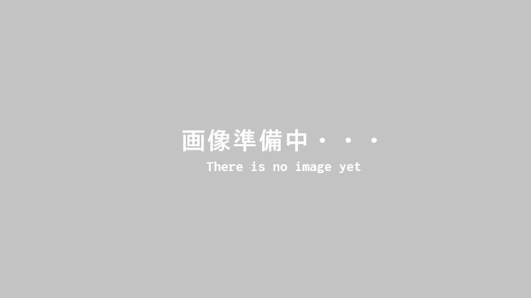
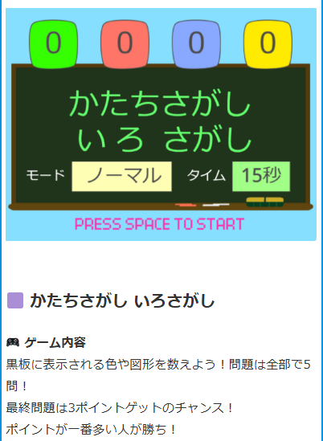
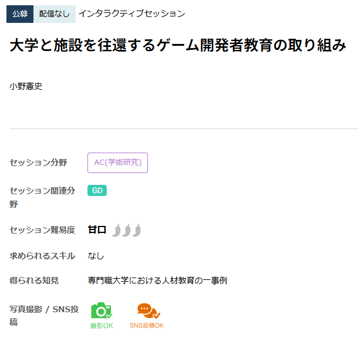

放課後等デイサービスで子どもたちにゲームを作った話

基本情報
- 制作時期
- 大学2年1～2月（制作期間：4週間）
- 役割
- 2人チーム（担当：設計、実装）
- 使用ツール
- Scratch
- リンク
- 実際に遊ぶ・見る
制作のきっかけ
大学の必修科目の一つとして、インターンシップ型の実習があり、私は保育現場での経験や知識があったので放課後等デイサービスでの実習を選択しました。
そこで、先生として利用者の子どもたちのお世話や交流を行いながら、ゲームを作り、子どもたちに楽しんでもらう体験を提供することになりました。
こだわった点・工夫した点
- 子どもたちとの対話・観察を徹底する
- 相談するにも、情報をかき集めて
- レビューと改良を、高速で回し続ける
ゲームを作るにも、障がいをもった子どもたちというターゲットをよく知らなければ喜んでもらえるゲームは作れません。
施設に出向く日には子どもたちとの交流を深め、何ができるか、どんなことが好きか、ヒアリングや分析を重ねました。
初めはコミュニケーションの取り方に戸惑い、施設の先生方に助けを借りる場面も多かったですが、実習も中盤に差し掛かると子どもたちも懐いてくれるようになりました。
施設長さん伝手に「1人の子が皆川さんに会えるタイミングがなかなか合わなくて泣いていた」というご報告までいただき、予想を遥かに超えて好かれていたのだなと実感しました。
施設長さんから、「今年は、ゲームに"知育要素"を入れてみてほしい」というご依頼を受けました。
その裏にあった思いなどを理解し、私たちも挑戦することとしましたが、「子どもたちに求める知育はどのレベルなのだろう」という疑問に辿り着きました。
そこで、現状世の中に出回っている知育ゲームを片っ端から調べ上げて精査し、施設長さんにご相談するときに「○○から××まで、ひとくちに知育と言っても様々なものがありまして」という形で話しました。
結果として求めるものの形が見えてきて、スムーズに制作に移れました。
中間発表の場で、私たちの作ったクイズゲームをお披露目しました。
ところが、UIなどの設計が甘く、子どもたちどころか施設の先生方にもあまり理解してもらえず、良い反応がいただけませんでした。
一時はゼロからの作り直しを検討するまでに至ったのですが、それでもこのゲームを最高の形に仕上げようという結論を出し、改良に勤しみました。
施設に行く日と大学で制作に励む日を交互に設定していただけたのも幸いし、テストプレイによる課題発見とゲームの改良のサイクルをとても速く回すことができました。テストプレイでも、繰り返し遊んだ子どもたちがゲームを理解して成長する姿を見届けることができ、非常に良い結果で終わることができたと感じています。


振り返り・学び
結果そのものは大変良く、科目としても最高のS評価をいただけたのですが、ゲームの設計に大きな難を抱えていたと振り返っています。
あまりにも『知育』に寄せ過ぎた結果、ゲームの外で私たちや先生方の盛り上げあってこそ楽しめるゲームになってしまい、あの場以外で活きることがなくなってしまいました。
設計力の大きな不足を感じたので、今後こういった機会をいただけたら、ゲーム自体をより面白く、バックボーンが無くても面白いゲームとして成立するような作品を作り上げたいと考えています。